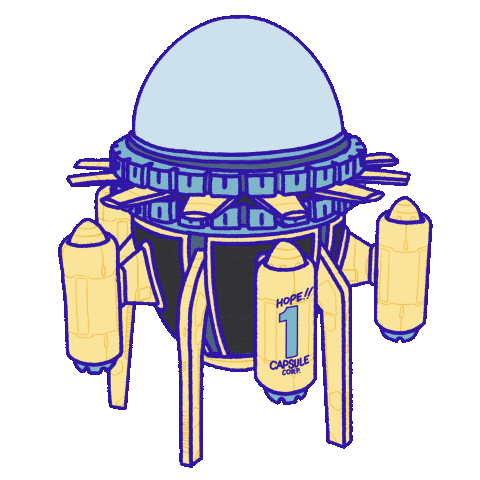

Wanders Maylon Alves Dos Santos
Desenvolvedor Frontend Júnior
- 
Sobre mim
Oi! meu nome é Wanders Maylon Alves Dos Santos, seja bem-vindo(a)!
Atualmente, curso o ensino superior, no curso de Comunicação Social: Publicidade e propaganda, tenho 26 anos.
Sempre gostei muito da área de tecnologia e recentemente comecei a ver muita programação, era o que eu queria estudar, antes mesmo de entrar na faculdade.Hoje, estou focado totalmente em estudar a fundo programação, pois eu comecei achar legal os códigos, comecei a desperta a curiosidade e tenho muita vontade de seguir carreira, até mais que em minha área como publicitário, estou em busca agora, me tornar um Developer Frontend Júnior, estudando HTML, CSS e JavaScript.
Gosto muito de café, muito mesmo, e meus principais hobbies são ver séries, filmes, jogar futebol e estar perto de quem eu amo.